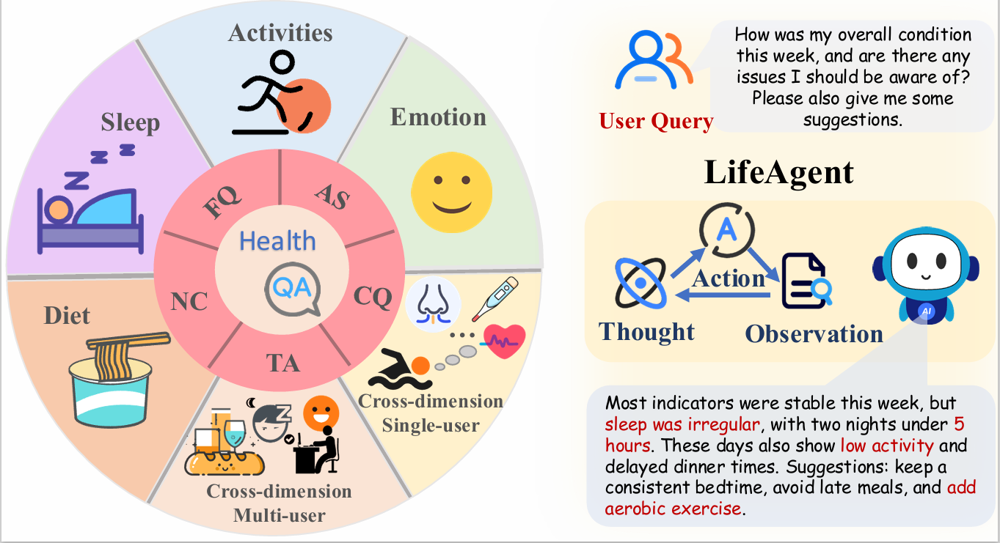
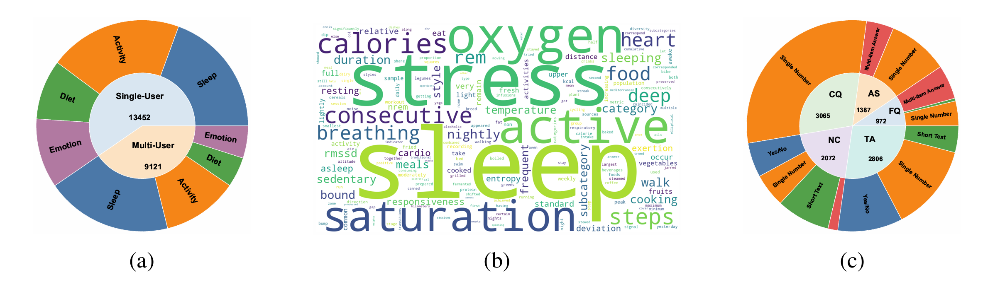

LifeAgentBench: Benchmarking LLMs for Long-Horizon, Cross-Dimensional Lifestyle Health Reasoning
Ye Tian*, Zihao Wang*, Onat Gungor, Xiaoran Fan, Tajana Rosing
University of California San Diego, Computer Science and Engineering Department

Abstract
Personalized lifestyle health analysis requires long-horizon, multi-dimensional reasoning over heterogeneous lifestyle signals, and recent advances in mobile sensing and large language models (LLMs) make such support increasingly feasible. However, the capabilities of current LLMs in this setting remain insufficiently understood due to the lack of systematic benchmarks. In this paper, we introduce LifeAgentBench, a large-scale QA benchmark for long-horizon, cross-dimensional, and multi-user lifestyle health reasoning, containing 22,573 questions spanning from basic retrieval to complex reasoning. We release an extensible benchmark construction pipeline and a standardized evaluation protocol, deriving verifiable answers through executable queries and programs to support reliable assessment. We then systematically evaluate 13 representative LLMs on LifeAgentBench and identify key bottlenecks in long-horizon aggregation and cross-dimensional reasoning. Motivated by these findings, we propose LifeAgent, a tool-augmented reasoning baseline that decomposes complex queries, performs multi-step evidence retrieval, and invokes tools for deterministic aggregation. LifeAgent substantially enhances LLMs' capabilities on challenging reasoning tasks, achieving clear improvements over widely used baselines and showing potential for health reasoning in everyday scenarios. The benchmark is publicly available.https://gdfwj.github.io/LifeAgentBench
Overall Structure

BibTeX
@article{tian2026lifeagentbench,
title={LifeAgentBench: A Multi-dimensional Benchmark and Agent for Personal Health Assistants in Digital Health},
author={Tian, Ye and Wang, Zihao and Gungor, Onat and Fan, Xiaoran and Rosing, Tajana},
journal={arXiv preprint arXiv:2601.13880},
year={2026}
}